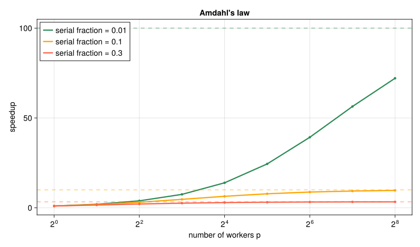

16. 並列計算とGPU#
これまでの数値実験では、初期値・刻み幅・乱数の種などを変えて結果を比較した。例えば独立に走らせる複数のMCMC連鎖は同時に進められるが、1本の連鎖の次の状態は現在の状態を待つ必要がある。
並列計算は、一つの仕事をいくつかの小さな仕事に分け、複数の計算資源で同時に進める方法である。ただし、計算資源を2倍にしても実行時間が必ず半分になるわけではない。仕事を分ける時間、結果を集める時間、データを受け渡す時間も必要になるからである。本章では、まずCPUコア、プロセス、スレッドの違いを整理し、次に「仕事をどう分配するか」と「どのメモリを共有するか」という二つの観点から並列計算を学ぶ。
16.1. この章の目標#
CPUコア、プロセス、スレッドの役割を区別できる。
スレッド間ではメモリが共有され、プロセス間では原則として共有されないことを説明できる。
処理時間が均一な場合と不均一な場合で、適切なスケジューリングが異なることを説明できる。
Amdahlの法則から高速化の上限を見積もれる。
仕事を分割する際に、依存関係と共有書込みを確認できる。
BLASが内部で並列化される場合を説明できる。
GPUでデータ転送と計算量の比が重要な理由を説明できる。
16.2. 並列化できる部分を見極める#
最初に、各仕事が何を入力として待つかを見る。例えば次の違いがある。
計算 |
同時に進められる範囲 |
待つ必要がある範囲 |
|---|---|---|
複数の初期値でODEを解く |
初期値ごとの計算 |
各計算内の次の時刻 |
陽解法でPDEを1ステップ進める |
古い配列から各格子点を更新する計算 |
全点の更新完了から次のステップへの移行 |
独立なMCMC連鎖 |
各連鎖 |
連鎖内の次の提案 |
古い配列と新しい配列を分けることも、この依存関係を保つために役立つ。
逐次実行に要する時間を \(T_1\)、\(p\) 個の計算資源で並列実行した時間を \(T_p\) とする。高速化率（speedup）\(S(p)\) と並列効率（efficiency）\(E(p)\) を
と定義する。例えば4 コアで \(S(4)=3\) なら、実行時間は3分の1になり、並列効率は \(E(4)=0.75\) である。
ここで、全実行時間のうち並列化できず逐次実行する部分の割合を \(s\)、残りを \(p\) 個の資源で理想的に並列化できるとする。Amdahlの法則によるspeedupの上限は
である。これは問題サイズを固定し、並列部分が理想的に分担されるとしたモデルである。例えば逐次部分が1秒、並列化できる部分が9秒なら、4資源では \(1+9/4=3.25\) 秒、約3.08倍となる。\(s=0.1\) なら、資源を無限に増やしても10倍を超えない。しかも実際には、タスクの生成、データの通信、処理終了を待つ同期などのオーバーヘッド（計算以外の余分な手間）が加わる。この式は「並列化すれば必ず速くなる」のではなく、逐次部分とオーバーヘッドを減らすことが重要だと教えている。
speedup(s,p) = 1/(s+(1-s)/p)
for s in (0.01,0.1,0.3)
println("逐次割合=$s: ", [(p,round(speedup(s,p),digits=2)) for p in (2,4,8,32)])
end
逐次割合=0.01: [(2, 1.98), (4, 3.88), (8, 7.48), (32, 24.43)]
逐次割合=0.1: [(2, 1.82), (4, 3.08), (8, 4.71), (32, 7.8)]
逐次割合=0.3: [(2, 1.54), (4, 2.11), (8, 2.58), (32, 3.11)]
Show code cell source
# 初回のみ: import Pkg; Pkg.add("CairoMakie")
using CairoMakie
CairoMakie.activate!(type="svg")
set_theme!(Theme(fontsize=16, linewidth=2.5))
figure_dir = isdir("pic") ? "pic" : joinpath("..", "pic")
processor_counts = 2.0 .^ (0:8)
serial_fractions = (0.01, 0.1, 0.3)
fig_amdahl = Figure(size=(850, 500))
ax = Axis(fig_amdahl[1, 1]; xlabel="number of workers p", ylabel="speedup",
xscale=log2, title="Amdahl's law")
for (serial_fraction, color) in zip(serial_fractions, (:seagreen, :orange, :tomato))
values = 1.0 ./ (serial_fraction .+ (1-serial_fraction) ./ processor_counts)
lines!(ax, processor_counts, values; color=color,
label="serial fraction = $serial_fraction")
scatter!(ax, processor_counts, values; color=color, markersize=7)
hlines!(ax, [1/serial_fraction]; color=(color, 0.35), linestyle=:dash)
end
axislegend(ax; position=:lt)
save(joinpath(figure_dir, "parallel_amdahl_law.svg"), fig_amdahl)
fig_amdahl


図 16.1 計算資源数 \(p\) を増やしても、逐次部分は短縮されない。各破線は \(p\to\infty\) における上限 \(1/s\) を表す。逐次割合 \(s\) が大きい曲線ほど早く頭打ちになるため、計算資源を追加する前に、どの処理が逐次部分として残るかを調べる必要がある。#
16.3. CPUコア、プロセス、スレッド#
最初に、よく似た三つの用語を区別する。
CPUコア（CPU core）：命令を実際に処理するハードウェア上の計算資源である。複数のコアがあれば、複数の処理を物理的に同時実行できる。
プロセス（process）：実行中のプログラムの単位であり、原則としてプロセスごとに独立したメモリ空間を持つ。同じ変数名
Aが二つのプロセスにあっても、それらは別のデータである。スレッド（thread）：一つのプロセス内にある命令実行の流れである。各スレッドは命令をどこまで実行したかという状態や局所的な作業領域を持つ一方、同じプロセスのスレッドはヒープ上の配列やグローバル変数などを共有する。
プログラムを料理店にたとえると、プロセスは厨房、スレッドはその厨房内で働く料理人、CPUコアは料理人が実際に使える作業台に対応する。料理人を増やしても作業台が少なければ全員が同時には働けず、作業台を交代で使うことになる。
観点 |
スレッド並列 |
プロセス並列 |
|---|---|---|
メモリ |
同じプロセス内で共有する |
プロセスごとに分離される |
データの受渡し |
同じ配列を直接参照できる |
通信時にデータを直列化（serialize）して送るのが基本 |
主な利点 |
データ共有が軽い |
分離されているため互いの状態を壊しにくく、複数の計算機にも拡張できる |
主な注意点 |
競合状態、同期 |
通信量、データの複製、プロセス起動時間 |
Juliaの主な機能 |
|
標準ライブラリ |
スレッド数は通常、Juliaの起動時に julia --threads=auto や julia --threads=4 のように指定する。Notebookではカーネルを起動した後にスレッド数を増やすことはできないため、次のセルで nthreads() が1なら、複数スレッドを有効にしてカーネルを起動し直す必要がある。
16.3.1. スレッドが共有するメモリと競合状態#
スレッドは同じ配列を直接読み書きできる。これはデータをコピーせずに済むという利点だが、複数スレッドが同じ要素を同時に更新すると問題になる。例えば s += x[i]^2 は、概念的には (1) s を読む、(2) 和を計算する、(3) s へ書き戻す、という三つの操作からなる。二つのスレッドの操作が途中で交差すると、一方の加算結果が失われることがある。これを 競合状態（race condition） という。
次の実装では、配列をいくつかの区間に分け、各区間の担当が自分の部分和だけを計算する。区間番号ごとに異なる保存先を用意し、並列ループ終了後に一度だけ合計する。保存先はスレッド番号ではなく仕事の番号に対応する。
using Base.Threads
serial_sum_of_squares(x) = sum(abs2,x)
function threaded_sum_of_squares(x; nblocks=4)
nblocks>0 || error("区間数は正にしてください")
edges = [fld(j*length(x),nblocks) for j in 0:nblocks]
partial = zeros(Float64,nblocks)
Threads.@threads for block in 1:nblocks
subtotal = 0.0
for i in edges[block]+1:edges[block+1]
subtotal += abs2(x[i])
end
partial[block] = subtotal
end
return sum(partial)
end
x = collect(1.0:8.0)
println("スレッド数 = ", Threads.nthreads())
println("逐次版 = ", serial_sum_of_squares(x))
println("分割した版 = ", threaded_sum_of_squares(x))
println("一致の確認 = ", isapprox(serial_sum_of_squares(x),threaded_sum_of_squares(x)))
スレッド数 = 4
逐次版 = 204.0
分割した版 = 204.0
一致の確認 = true
上の8個の値を4区間に分けると、区間は1〜2、3〜4、5〜6、7〜8である。各部分和は5、25、61、113となり、合計は204になる。複数の仕事が同じ partial[block] を書き換えないことが、正しさの要点である。スレッドが1個の環境でも同じコードで値を確認できる。
浮動小数点数では、加算順序が変わると末尾の桁が変わる場合がある。大きな計算では、第4章で学んだ尺度に合う許容誤差で比較する。
16.4. 仕事量の偏りと分け方#
各仕事の所要時間が同じなら、開始前に同じ個数ずつ分ける静的な割当てでよい。一方、収束するまでの反復回数が初期値ごとに違う場合は、先に終わった担当へ次の仕事を渡す方法が有効になる。
例えば仕事が8個で所要時間が \([8,7,6,5,4,3,2,1]\) 秒なら、先頭から2個ずつ4担当へ分けると最長15秒である。空いた担当へ次の仕事を渡せば、この例では各担当9秒で終わる。ただし、仕事を細かく分けるほど、割当てと通信の手間が増える。この一つの仕事の大きさを粒度という。
Juliaにも :static、:dynamic、:greedy などの割当て方式がある。
:static：仕事を均等に分ける。各担当の仕事量が同じ場合に有効。スケジューリングのoverheadは小さいが、待ちが発生する可能性がある。:dynamic：仕事を順番に割り当てる。各担当の仕事量が不均一な場合に有効。ある程度のchunkを動的に割り当てる。:greedy：仕事を1個ずつ割り当てる。各担当の仕事量が不均一な場合に有効。スケジューリングのoverheadは大きい。
16.5. 行列計算の内部の並列化とGPU#
密な行列積や分解は、BLAS/LAPACKという数値計算ライブラリを通じて実行され、内部ですでに並列化される場合がある。外側のスレッド並列と重ねると、同じコアを取り合って遅くなることもある。現在のBLASスレッド数は BLAS.get_num_threads() で確認できる。
GPUは、行列積など多数の同種の演算をまとめて行うときに力を発揮する。CPUとGPUの間の転送や初期化にも費用がかかるので、データをGPU上に保って何度も計算する方が有利になりやすい。共有メモリ型の機器でも、配置や同期に関する費用は残る。
以下はNVIDIA GPUと追加パッケージ CUDA.jl がある環境での例である。GPUを持たない環境では、この処理の流れを読めればよい。
using CUDA
A_gpu = CuArray(A) # 入力をGPUへ置く
B_gpu = CuArray(B)
CUDA.@sync C_gpu = A_gpu*B_gpu
C = Array(C_gpu) # 結果をCPUへ戻す
GPUの処理はCPUに対して非同期で進む場合がある。時間を測るなら、処理完了を待つ同期も必要である。「計算だけの時間」と「転送も含む全体の時間」を分け、目的に合う方で比較する。
using LinearAlgebra
println("BLASのスレッド数 = ",BLAS.get_num_threads())
BLASのスレッド数 = 4
16.6. \(\clubsuit\) 実行時間を測る場合#
初回のコンパイルを先に済ませ、同じ入力で複数回測る。以下は最小値を使う簡単な測定であり、環境によっては逐次版の方が速い。スレッド数、問題サイズ、計算結果の一致を測定値と一緒に記録する。問題サイズを固定して資源数を変える比較を強スケーリング（strong scaling）、1資源当たりの仕事量を保って全体を増やす比較を弱スケーリング（weak scaling）という。
function best_elapsed(f; samples=3)
f() # 初回のコンパイルを先に済ませる
return minimum([@elapsed f() for _ in 1:samples])
end
x_timing = collect(range(0.0,1.0,length=100_000))
serial_value = serial_sum_of_squares(x_timing)
parallel_value = threaded_sum_of_squares(x_timing)
@assert isapprox(serial_value,parallel_value;rtol=1e-12)
t_serial = best_elapsed(() -> serial_sum_of_squares(x_timing))
t_parallel = best_elapsed(() -> threaded_sum_of_squares(x_timing))
println("スレッド数 = ", Threads.nthreads())
println("逐次版（秒） = ", t_serial, ", 分割した版（秒） = ",t_parallel)
println("高速化率 = ", t_serial/t_parallel)
スレッド数 = 4
逐次版（秒） = 9.541e-6, 分割した版（秒） = 3.9708e-5
高速化率 = 0.24027903696988015
16.7. \(\clubsuit\) プロセスで独立した計算を配る#
プロセスは原則としてメモリを共有しないので、同じ配列名を書いても自動的に同じデータが見えるわけではない。計算に使う関数やデータを別のJuliaプロセスへ渡す必要がある。これは複数の計算機へ広げる方法にもつながる。
次の例は、減衰係数の異なる4個の独立なEuler計算を配る。pmap が結果を入力順に集める。プロセスを起動して通信する費用があるため、この小さな例が高速化するとは期待しない。共有メモリとの違いを確かめる例である。
using Distributed
# 小さな無名関数を、仕事と一緒に各プロセスへ送る。
decay_job = rate -> begin
u = 1.0
h = 0.01
for _ in 1:100
u += h*(-rate*u)
end
u
end
added_workers = addprocs(2)
try
rates = [0.5,1.0,1.5,2.0]
pool = WorkerPool(added_workers)
distributed_values = pmap(decay_job,pool,rates)
serial_values = map(decay_job,rates)
println("減衰係数 = ",rates)
println("各係数での終点の値 = ",distributed_values)
println("逐次版との一致 = ",isapprox(distributed_values,serial_values))
finally
rmprocs(added_workers) # 今回追加したプロセスだけを終了する。
end
減衰係数 = [0.5, 1.0, 1.5, 2.0]
各係数での終点の値 = [0.605770436490728, 0.3660323412732296, 0.2206089104693876, 0.13261955589475316]
逐次版との一致 = true
16.8. まとめ#
本章のまとめ
並列化の前に、どの入力を待つか、誰がどの結果を書き込むかを決める。スレッドはメモリを共有し、プロセスは原則として分離する。正しさを保てても、逐次部分・通信・割当ての費用により速くならない場合がある。GPUや行列計算ライブラリの内部の並列化でも、全体の費用を評価する考え方は同じである。
講義全体を通して、数値計算では問題を有限の形で表す、構造を使って計算する、得られた値を検証することを繰り返してきた。高速化はその最後に加える工夫であり、速さとともに精度・再現性・必要な記憶量を確認する。
16.9. 演習#
本文の式・表・出力を使って説明してよい。
演習
同時に進められるか：4種類の初期値でODEを解く計算と、1本のODEの連続する4ステップについて、どこに依存関係があるかを説明せよ。
速さの上限：逐次実行で10秒、そのうち1秒は並列化できない。残りを4資源に理想的に分けると何秒になるか。資源を無限に増やしても何倍までしか速くならないか。
部分和の保存先：本文の8個の値の二乗和について、4個の部分和と合計を確かめよ。全担当が同じ変数へ直接加算すると結果が失われ得る理由を、読込みと書戻しの順序で説明せよ。
探究：自分の計算機で高速化率を測る：
julia --threads=autoなどで複数スレッドを有効にし、threaded_sum_of_squaresの配列の長さ（例えば \(10^4\) から \(10^8\)）と区間数nblocksを変えて、逐次版に対する高速化率を測れ。まず「長さがどのくらいから並列版が速くなるか」を予想して書き、結果と比べよ。測定した高速化率からAmdahlの法則の逐次割合 \(s\) を逆算すると、配列の長さによって \(s\) はどう変わるか。\(s\) が一定でない理由を、オーバーヘッドの観点から説明せよ。測定条件（CPU、スレッド数、試行回数）も記録すること。
16.10. 参考資料#
CUDA.jl公式：GPUの実行時間測定と同期。